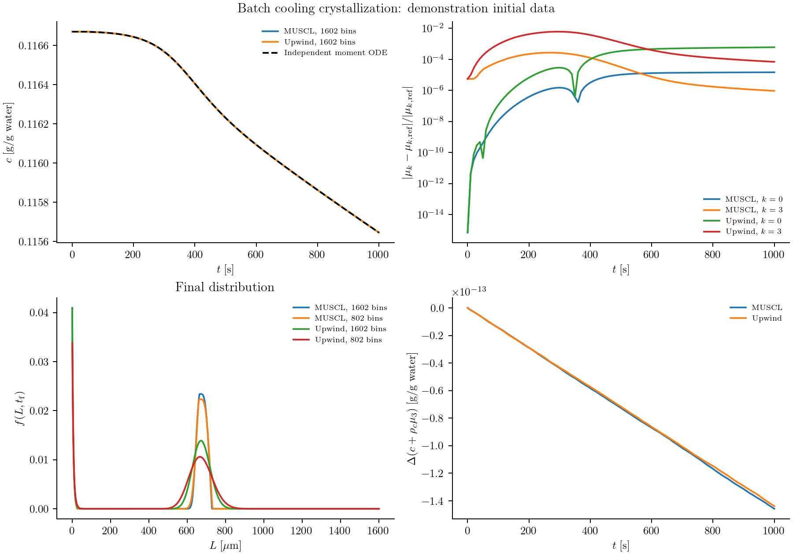

Batch cooling crystallization
Cooling a saturated solution makes crystallization possible, but it does not determine the final crystal sizes. Existing seeds grow, new crystals nucleate, and both processes reduce the supersaturation that drives them. To predict the size distribution, we need to solve a population balance and a solute balance together.
Here we consider a seeded batch of potassium nitrate with size-dependent growth and secondary nucleation. The kinetics and cooling trajectory come from Gunawan, Fusman, and Braatz (2004), Example 2. This calculation illustrates how a rate law reads a shared concentration, how nucleation enters through a boundary, and how the discrete solute balance is constructed from the particle calculation.
Write the two balances
Let $f(L,t)$ denote the number density at crystal length $L$. For $L>0$, growth transports crystals through size space:
\[\frac{\partial f(L,t)}{\partial t} +\frac{\partial\!\left[G(L,c(t),T(t))f(L,t)\right]}{\partial L}=0.\]
Nuclei enter at zero length through the boundary condition
\[G(0,c(t),T(t))f(0,t)=B_0(c(t),T(t)).\]
Write the relative supersaturation as $s(t)=\max[c(t)/c_{\mathrm{sat}}(T(t))-1,0]$. The kinetic laws are
\[G(L,c,T)=k_gs^g(1+\alpha L),\qquad B_0(c,T)=k_b s^b\int_0^\infty L^3f(L,t)\,dL.\]
The concentration decreases as crystal volume increases:
\[\frac{dc(t)}{dt}=-3\rho_c\int_0^\infty L^2G(L,c(t),T(t))f(L,t)\,dL.\]
Length is in µm, time in seconds, and $c$ in grams of solute per gram of water. The volume convention is $\int L^3f\,dL$; no spherical shape factor is inserted. At zero length a nucleus has zero continuum volume. The model sets growth and nucleation to zero below saturation: it does not describe dissolution.
Supply parameters and the cooling trajectory
The reusable recipe is in examples/papers/gunawan2004_case2.jl. Load it from the installed source directory:
using PopulationBalanceModels
include(joinpath(pkgdir(PopulationBalanceModels),"examples","papers","gunawan2004_case2.jl"))
import .Gunawan2004Case2
const recipe = Gunawan2004Case2
p = recipe.parameters()(kb = 4.64e-7, b = 1.78, kg = 116.0, g = 1.32, rho = 2.11e-12, size_factor = 0.1)The fields are $k_b=4.64\times10^{-7}$, $b=1.78$, $k_g=116$, $g=1.32$, $\rho_c=2.11\times10^{-12}$ g/µm³, and $\alpha=0.1$ µm⁻¹. They can be changed explicitly, for example with recipe.parameters(kg=120.0).
Temperature is a prescribed operating history:
\[T(t)=32-4(1-e^{-t/18600}),\qquad c_{\mathrm{sat}}(T)=1.721\times10^{-4}T^2-5.88\times10^{-3}T+0.1286.\]
The recipe implements these as temperature(t) and solubility(T). Unlike temperature, concentration belongs in the state vector because the model must solve for it.
Define growth and nucleation
The following are the callbacks used by the recipe:
supersaturation(ctx) = max(ctx.bulk.c / recipe.solubility(ctx.fields.T) - 1, 0.0)
function growth_rate(L,p,t,ctx)
p.kg * supersaturation(ctx)^p.g * (1 + p.size_factor * L)
end
function nucleation_rate(p,t,ctx)
p.kb * moment(ctx,3) * supersaturation(ctx)^p.b
end
model = PBMModel(
growth = Growth(rate=growth_rate),
nucleation = Nucleation(rate=nucleation_rate,size=0.0),
)growth_rate returns a length velocity in µm/s. nucleation_rate returns a total number creation rate, so it receives no length argument. moment(ctx,3) reads the third moment of this population at the current integration stage. The same callback works with bin numbers or the exactly closed moment representation.
Put nucleation at the boundary
We use a finite length range, 0–1600 µm. The seed support is split at its endpoints so a cell does not straddle the jump in the initial density:
edges = sort!(unique(vcat(collect(0.0:0.5:1600.0),180.5,210.5)))
grid = Grid1D(edges;coordinate=:length)
methods = TermMethods(
growth = MUSCL(),
by_term = (nucleation=BoundaryInjection(:left),),
)
operator = compile(model,grid;methods,bc=SizeBC(NoFlux(),NoFlux()))MUSCL reconstructs the density used in the growth face flux. BoundaryInjection adds $B_0$ to the first bin as an inward number flux; it does not evaluate $f(0,t)=B_0/G(0,t)$. The boundary nucleation term supplies the influx even though the transport boundary itself is NoFlux. Adding an InflowFlux for the same nuclei would count them twice.
The upper edge is closed. Its last bins should remain negligible; otherwise enlarge the domain before interpreting the result.
Couple the solute concentration
Each crystal carries the solute weight $\rho_cL^3$. Use that same weight to calculate how much solute the resolved population gains:
system = PBMSystem((crystals=operator,);
fields = (p,t)->(T=recipe.temperature(t),),
nonnegative_bulk = (:c,),
exchanges = (ConservativeExchange(:crystals,:c,
(L,p,t,ctx)->p.rho*L^3;
mechanisms=(:growth,:nucleation)),),
)ConservativeExchange subtracts the selected discrete particle-material rate from the concentration derivative. Consequently, $c+\rho_c\sum_iL_i^3N_i$ is conserved for this closed system. A boundary nucleus is represented at the first positive pivot and therefore has a small discrete volume. Including nucleation in the exchange accounts for it. That finite-grid contribution approaches the zero-volume continuum source as the first bin is refined.
Both concentration and distribution are evaluated at every Runge–Kutta stage. There is no separate concentration update after the population solve.
Initialize and solve
The reported seed is
\[f(L,0)= \begin{cases} -3.48\times10^{-4}L^2+0.136L-13.3,&180.5\le L\le210.5,\\ 0,&\text{otherwise}. \end{cases}\]
There is a numerical discrepancy in these printed coefficients:
recipe.reported_seed_density(195.5)-0.012646999999999409The polynomial is negative even at its maximum within the stated support. The runner retains it literally and rejects it as an initial population. A resolved nonnegative seed is needed to complete the published comparison; no replacement is used as the benchmark default. A separate numerical illustration with explicitly stated seed data is shown below.
Once the initial data are resolved, an input file can return (initial_density=f0,c0=c0,provenance="Source of these initial data"). A saturated start has $c(0)=c_{\mathrm{sat}}(32)=0.1166704$. State this choice explicitly. The remaining construction is:
inputs = include("/path/to/cooling_inputs.jl")
N0 = recipe.initial_counts(grid,inputs.initial_density)
problem = PBMProblem(system,(crystals=N0,),(0.0,1000.0);
bulk0=(c=inputs.c0,),p)
solution = simulate(problem;method=SSPRK33(),dt=0.01,saveat=0.0:10.0:1000.0)
crystals = population(problem,solution.u[end],:crystals)
final_density = density(grid,crystals)
final_concentration = bulk(problem,solution.u[end],:c)Check the distribution against its moments
For this growth law the first four moment equations close exactly:
\[\frac{d\mu_0(t)}{dt}=k_b\mu_3(t)s(t)^b, \qquad \mu_k(t)=\int_0^\infty L^kf(L,t)\,dL,\]
\[\frac{d\mu_k(t)}{dt}=k k_gs(t)^g[\mu_{k-1}(t)+\alpha\mu_k(t)], \quad k=1,2,3,\qquad \frac{dc(t)}{dt}=-\rho_c\frac{d\mu_3(t)}{dt}.\]
These ODEs provide an independent check of the sectional calculation. Material balance alone is insufficient: the discrete exchange can conserve material while the distribution still has substantial discretization error.
The runner compares upwind and MUSCL with an independent RK4 moment solution, checked by halving its time step. It exports concentration, moments, final distributions, and material drift:
julia --project=. examples/cooling_crystallization_benchmark.jl /path/to/cooling_inputs.jl
python docs/benchmarks/plot_case_studies.py coolingThe default is 3200 bins with a 0.01 s time step. Include 32000 bins to approach the 0.05 µm reference spacing in the source study. This compares solutions of the model; the published HR1 and Lax–Wendroff algorithms are not implemented.
Numerical illustration with stated seed data
The panels below retain a separate calculation with $f(L,0)=0.08[1-((L-195.5)/15)^2]$ on 180.5–210.5 µm and $c(0)=c_{\mathrm{sat}}(32)$. This seed is a demonstration choice, not a correction to the printed polynomial. The calculation uses upwind and MUSCL, an independent moment reference, and material-balance diagnostics. It does not establish a reproduction of the published figures.

The input provenance and raw data remain in docs/benchmarks/diagnostics/cooling_benchmark/. Re-render this retained evidence with python docs/benchmarks/plot_case_studies.py illustrations --usetex.